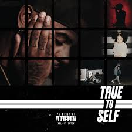

If there's anything I couldn't live without it would probably be music. I like a lot of different kinds of music. The music I like ranges from Hip-hop/Rap to Soul/R&B to Alt. rock and even spanish music. A lot of people find it weird that I like spanish music and seem to think I don't really look like the type to listen to that kind of music. Spanish music always seems so up-beat which is why I find it so great. My favorite artist as of right now has to be Bryson Tiller. Tiller is a "Trapsoul" artist which is a mixture of hip-hop and soul music. I started listening to him when his album "Trapsoul" came out in 2015. Since then I've listened to him constantly and if my headphones are in you could guess I'm listening to Tiller because I most likely am.